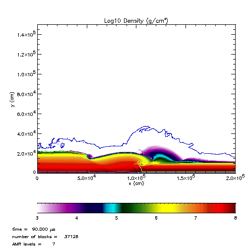
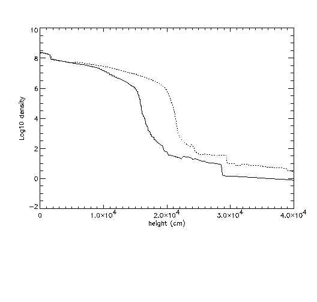
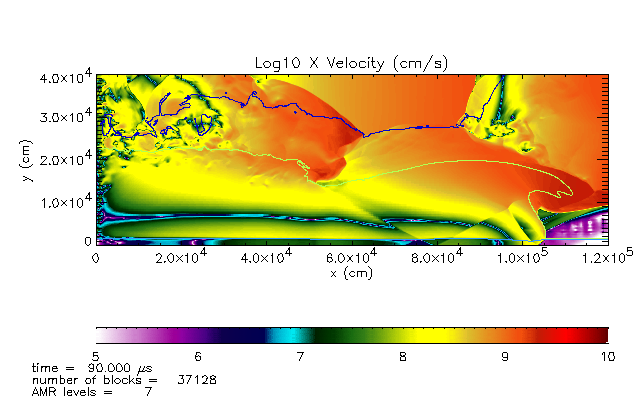

Waves
90 microsecond plot showing waves

slices through the waves vertically. Solid line is at 6e4 cm, dashed lines is at 9.e4 cm

velocity at 90 micros

Non-linear wave speed is given by
v = sqrt(g*d'*(d+d')/2d)
d' = distance from base to wave height
d = distance from base to trough
taking d' = 1.5e4, d = .9e4, (base at 1.e4), yields v = 1.4e9 cm/s